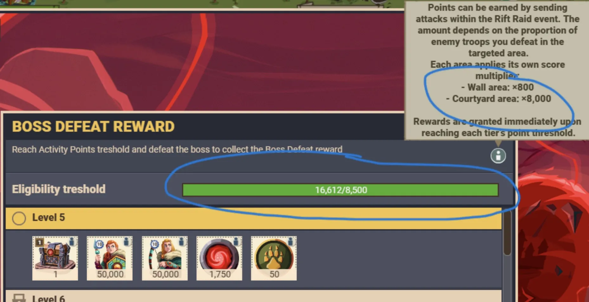
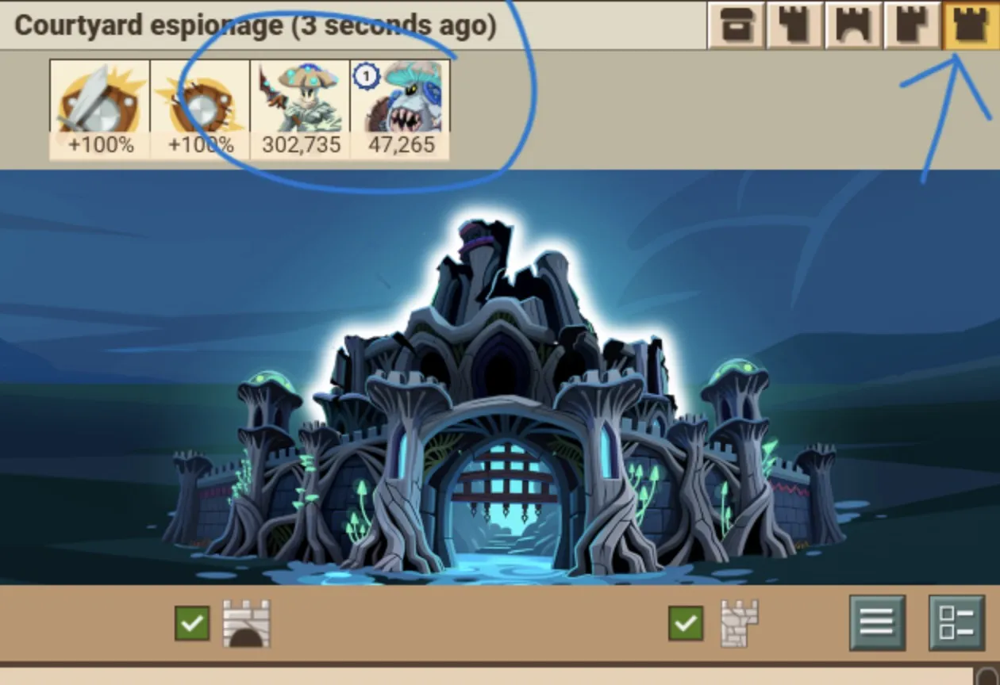
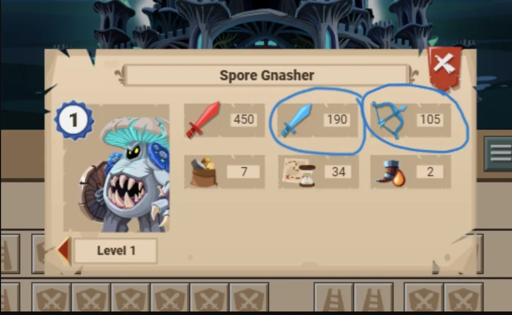
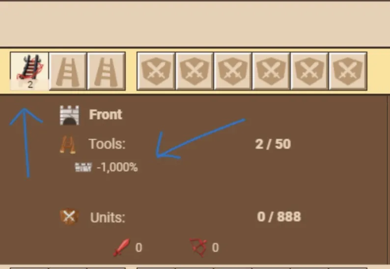
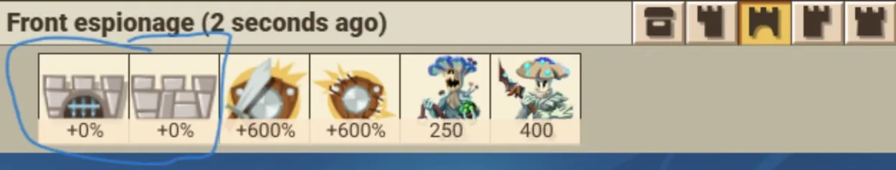
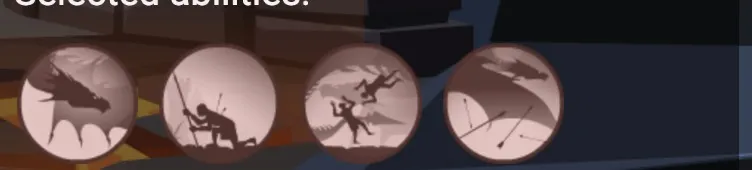
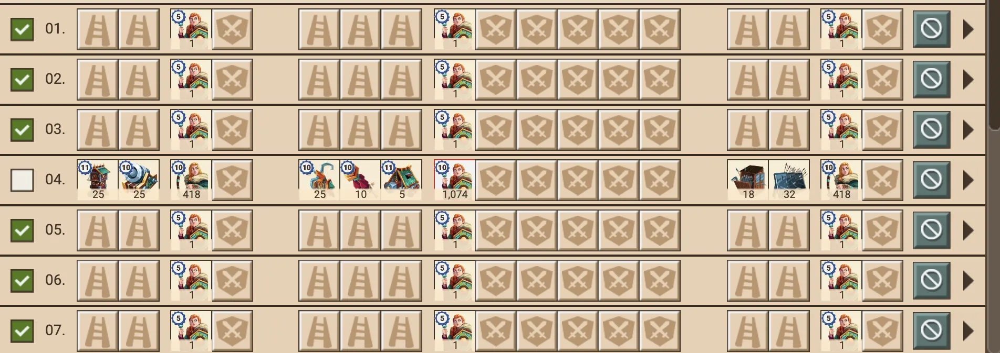

Rift Raid is an alliance event where your whole alliance chips away at a giant boss castle. It plays differently from a normal attack — here's the model, plus field-tested attack doctrine from our own raids.
The three bosses — and picking one
Each Rift Raid features one boss, each with its own gimmick:
| Boss | Signature mechanic |
|---|---|
| Mistress of Decay (Necromancer) | Turns your losses into her zombies; can suppress melee or ranged attacks. |
| Mycelial Sovereign (Fungal) | Fast-regenerating walls; slow them with the support tool. |
| Ashen Tyrant (Dragon) | Spawns and mutates dormant eggs into ever-tougher dragons. |
Health = the reserve
The boss's health is really a giant reserve of courtyard troops. Every time the alliance clears the courtyard, it's resupplied from the reserve — and that drop in the reserve is what lowers the health bar. No courtyard clears, no health progress.
Breach the wall first
Before anyone can touch the courtyard, a wall segment (left / front / right) has to be breached. Wall troops are regenerated, not taken from the reserve — so breaking a wall doesn't lower the boss's health by itself. It opens a window.
When a segment breaks it stays breached for a cooldown (often ~20 minutes at low levels), during which the courtyard behind it is exposed. Then the wall refills. Coordinate: the alliance should pour courtyard hits through a breach while it's open.
Points, qualifying & the eligibility threshold
Defeating troops earns Rift Points (these replaced the old Activity Points), and each area applies its own score multiplier — the courtyard is worth roughly 10× the wall (e.g. wall ×800 vs courtyard ×8,000 — hover the ⓘ info button in the Boss Defeat Reward tab to see your level's exact values).
- A hit that takes out the whole courtyard awards the full points shown at the top of that info panel (e.g. the full 8,000).
- Hits that don't clear the whole courtyard award a percentage of those points matching the percentage you killed.

Attacking: walls already down
Scout before you commit. On the attack screen, tap the icon in the top-right corner to see exactly what's defending the courtyard.

Then counter-send: rift defenders are lopsided — strong on one defence stat and weak on the other. If the courtyard is mostly units with strong ranged defence (weak melee defence), send a majority of melee troops — and vice versa.

Attacking: breaking walls
If the walls are up and you intend to break them, your goal is to nullify the wall and gate protection. If the wall or gate shows 1000%, bring enough wall/gate tools to cancel out that full 1000% (tool percentages stack per tool — see the attack screen as you slot them).


Advanced wall-breaking (Toril 80+)
For harder takedowns, the highest damage for the least troop/tool loss comes from a high-level Toril (at least 80+) with the ability selection shown below, attacking only on waves 4, 8, 10, 14 and 16.

Every wave you don't attack on becomes a dummy wave — a wave carrying a single sacrificial troop. The game counts a dummy as a real wave, so your general's abilities land on the wave numbers you planned. Skip the dummies and the count collapses — your "wave 4" hits as wave 1 and the ability timing falls apart. (Dummy waves are the same trick PvP players use for wall wipes.)

Gear for the Rift
Rift sets have effects that only work in the event — wall-protection reduction, breach-cooldown extensions, and in-event combat strength. The Rift Commander Maker lets you tick the rift pieces and gems you own and finds the best set-bonus combination. The Rift Raid Bosses overview shows each boss's per-stage wall garrison and effects so you know what you're hitting.
🌀 Rift Commander Maker 🌀 Rift Raid Bosses
🆕 The event shop
The raid blacksmith is the main sink for everything the event pays you, split into stalls by currency:
| Stall | Pays for |
|---|---|
| Rift Coin (34) | The workhorse stall — event tools (obsidian nets/shields, raid ladders & rams, potions) and rift loot boxes. |
| Rift Shard (45) | The rift equipment sets — Sporeguard, Amethyst, Dragon Hunter and friends, piece by piece. |
| Rubies (39) | The premium side: Gold/Silver tier tools and the premium rift boxes, straight for cash currency. |
| Legendary Rift Coin (3) | Three premium boxes only: Bronze (10), Silver (100) and Gold (1,000). |
| Booster tools (4) 🆕 | The Dominator line — see below. |
Every stall's full stock and exact prices are in the Rift Event Shop overview — it reads the game files directly, so it stays current as GGS adds stock.
- Raid Dominator Ladder — 36 Rift Coin ×10 (wall debuff plus Rift Points)
- Raid Dominator Ram — 36 Rift Coin ×10 (gate debuff plus Rift Points)
- Raid Dominator Banner — 60 Rift Coin ×10 (+100 Rift Points)
- Veteran Dominator Banner — 1,000 rubies ×10 (+250 Rift Points — the premium variant)
🆕 Alliance combat boosters
Leadership can now spend Alliance Coins to switch on combat boosters for the whole alliance during the raid. Alliance Coins come from the alliance funds your members donate into, so this is a genuine "bank it, then spend it at the right moment" decision — save them for the push on a hard boss level rather than burning them early.
The booster list and exact percentages ship with the 29 July update — the table is empty in the game files until then. This guide and the shop overview update automatically once it lands.
🆕 New boss loot & quests
- New boss loot — the drop tables gained fresh equipment, including cross-event pieces (gear that isn't locked to the rift). Watch for the Commander-slot pieces of the Dragon Hunter / Dragon Slayer / Dragon Vanquisher sets — they're already sitting in the game files without in-game names yet, so they're clearly part of this drop.
- 1,500+ new quests added across all reward tiers, which mostly matters for the Rift Tournament's Quest Board — a much deeper pool means fewer repeats and better odds that a reroll gives you something your alliance can actually clear.